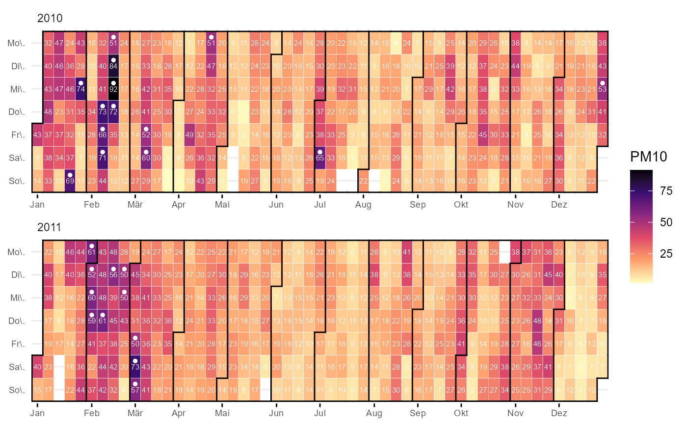
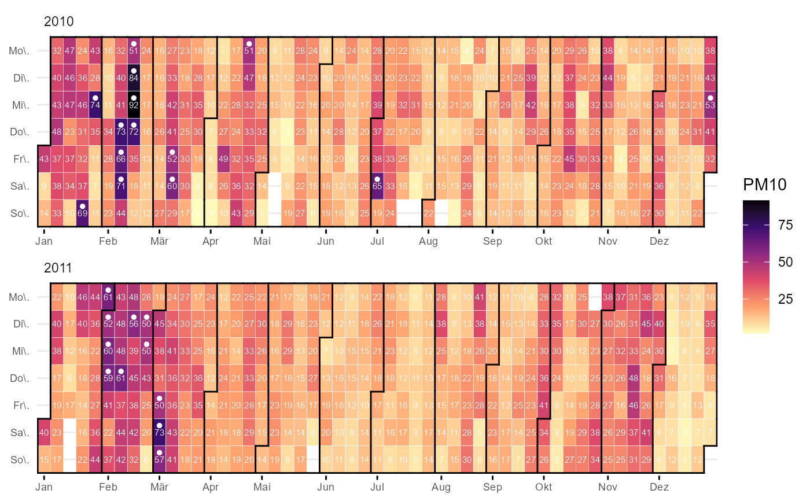

ggcalendar calculates the necessary date components and creates a ggplot object with the correct mappings for the other cal_* components.
cal_month_border uses ggplot2::geom_segment() to draw a border around the months.
cal_label is a wrapper around ggplot2::geom_text() (but ggplot2::geom_label() could be used).
ggcalendar(
data,
x = "date",
z = "O3_max_h1",
size = 0.1,
color = "white",
...,
locale = Sys.getlocale("LC_TIME")
)
cal_month_border(
size = 0.5,
lineend = "square",
linejoin = "bevel",
color = "grey5",
...
)
cal_label(
mapping = NULL,
stat = "identity",
data = NULL,
geom = "text",
position = "identity",
show.legend = FALSE,
inherit.aes = TRUE,
na.rm = TRUE,
size = 2,
color = "white",
...
)Arguments
- data
input data
- x
date column as Date, POSIXct or Character
- z
value columns
- size
parameter passed on to
geom_tile()=> space between tiles- color
parameter passed on to
geom_tile()=> color of space between tiles- ...
more options for
ggplot2::geom_tile()- locale
locale string for
lubridate::month()andlubridate::wday(). SeeSys.getlocale()- lineend
Line end style (round, butt, square).
- linejoin
Line join style (round, mitre, bevel).
- mapping
Set of aesthetic mappings created by
aes()oraes_(). If specified andinherit.aes = TRUE(the default), it is combined with the default mapping at the top level of the plot. You must supplymappingif there is no plot mapping.- stat
The statistical transformation to use on the data for this layer, as a string.
- geom
geom used for layer. "label" could be an alternative
- position
Position adjustment, either as a string, or the result of a call to a position adjustment function.
- show.legend
logical. Should this layer be included in the legends?
NA, the default, includes if any aesthetics are mapped.FALSEnever includes, andTRUEalways includes. It can also be a named logical vector to finely select the aesthetics to display.- inherit.aes
If
FALSE, overrides the default aesthetics, rather than combining with them. This is most useful for helper functions that define both data and aesthetics and shouldn't inherit behaviour from the default plot specification, e.g.borders().- na.rm
If
FALSE, the default, missing values are removed with a warning. IfTRUE, missing values are silently removed.
Value
ggplot2 object ggplot2 layer ggplot2 layer
Examples
library(ggplot2)
fn <- rOstluft.data::f("Zch_Stampfenbachstrasse_2010-2014.csv")
# keep only 2 years for smaller plotsize
df <-
rOstluft::read_airmo_csv(fn) %>%
dplyr::filter(starttime < lubridate::ymd(20120101)) %>%
rOstluft::resample(new_interval = "d1") %>%
rOstluft::rolf_to_openair()
ggcalendar(df, z = "PM10") +
scale_fill_viridis_c(direction = -1, option = "magma", na.value = NA)
 # can be customised...
ggcalendar(df, z = "PM10") +
scale_fill_viridis_c(direction = -1, option = "magma", na.value = NA) +
cal_month_border(color = "black") +
stat_filter(aes(filter = PM10 > 50), position = position_nudge(y = 0.25),
size = 1, shape = 21, color = "white", fill = "white") +
cal_label(aes(label = round(PM10,0)))

# can be customised...
ggcalendar(df, z = "PM10") +
scale_fill_viridis_c(direction = -1, option = "magma", na.value = NA) +
cal_month_border(color = "black") +
stat_filter(aes(filter = PM10 > 50), position = position_nudge(y = 0.25),
size = 1, shape = 21, color = "white", fill = "white") +
cal_label(aes(label = round(PM10,0)))
